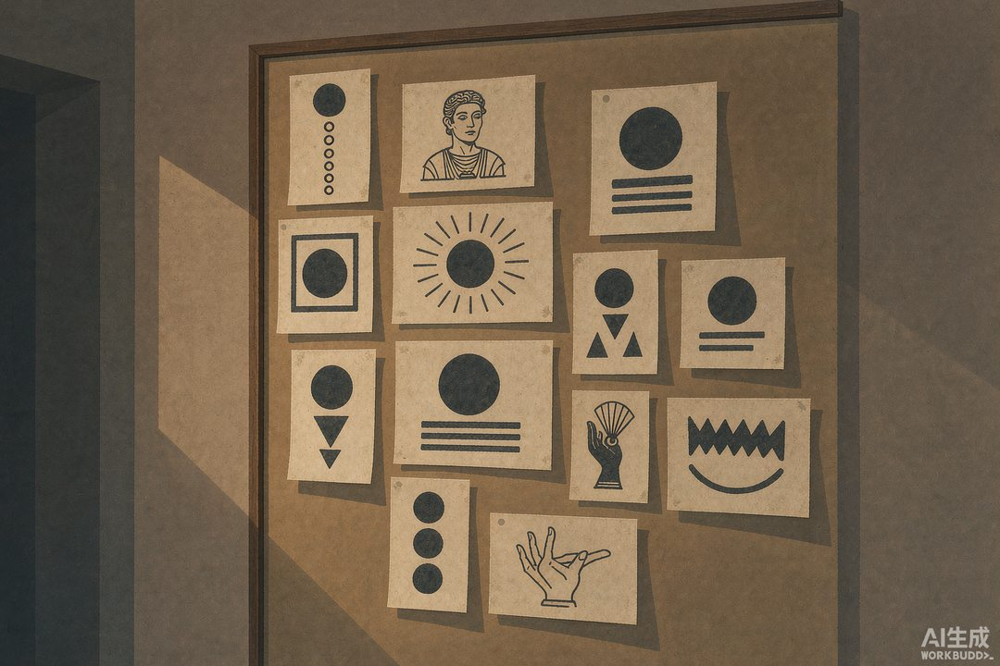
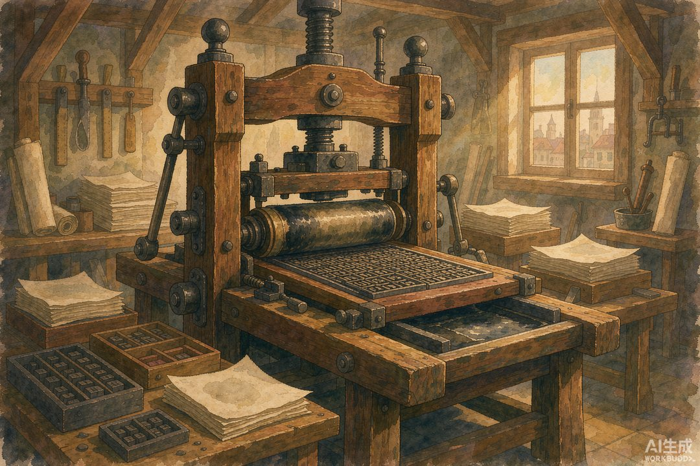

|
信息传播那些事儿 · 卷二 · 第 36 篇 |
|
卷二小结 —— 当信息学会"官办"与"被管" |
▲ 从进奏院到文字狱，卷二走完一条信息被机构化、被管束的长路（AI 生成示意图）
|
卷二从唐代进奏院状一路走到清代文字狱，十篇连成一条线：信息怎么被机构化采集、被快马送达、被官员阅读、被百姓用童谣回应，又被统治者用审查和禁书收束。这一篇我们不讲新故事，只把这条线拎出来，看看它到底在说什么。 |
卷一讲的是"文字出现之前"，人怎么靠嘴、靠火、靠脚传递信息。卷二换了个主角：国家。当信息被衙门接管，它既是工具，也是枷锁。
一 | 暗线一：从"内参"到"日报" |
卷二开头，唐代进奏院状是地方驻京办发回老家的"内参"；到宋代，邸报成了定期发行的官方日报，民间还冒出"小报"这种非法自媒体；明代塘报、捷报把军情做成专业快报；官员们则围着一份邸报读升迁、读风向。信息的"生产—发行—阅读"被彻底机构化，和今天的媒体产业链惊人地像。
有意思的是，几乎每一环都有"民间版"在旁边野长：小报钻邸报的空子，童谣替老百姓发声，抄报行靠卖报赚钱。官方和民间，始终在抢同一个麦克风。

▲ 从进奏院状到京报：一部官报编年（AI 生成示意图）
二 | 暗线二：速度即权力 |
拜占庭的烽火链、蒙古的金牌驿网、明朝的六百里加急——卷二里最热闹的，是"怎么让信息跑赢距离"。蒙古驿网东半部一千四百多站，急件一天奔两三百公里；明军情"六百里加急"只给边关入寇专用。谁先让消息抵达决策中心，谁就先赢一步。
这条暗线到今天都没断：从驿马到电报、到光纤、到 5G，人类折腾了几千年，干的还是同一件事——把"现在"尽快送到"远方"。
三 | 暗线三：自由与管束的拉锯 |
卷二最沉的底色，是收束。周代用木铎采诗"观风俗"，是把民声请进来；宋代用"定本"事先审查邸报，是把内容卡出去；清代借修《四库全书》"寓禁于征"，连书带人一起管。从"听你说"到"只准我说"，信息的闸门越收越紧。
所以卷二真正的主题，不是某项技术，而是一个永恒的张力：信息要流动，权力要控制。这两股劲，从古拉到今。

▲ 卷三的钥匙：当铅字排进框，信息的垄断开始松动（AI 生成示意图）
📌 卷二十篇一览（第 26–35 篇） | ||||||||||||||||||||
|
|
数字锚点 · 卷二的量与线 | |||||||
|
|
🔔 下篇预告 · 卷三第 37 篇《古登堡与活字印刷》—— 当信息还被少数人把持，一个德国工匠把铅字排进了框里。下一篇，印刷术如何砸开信息的垄断，把"读书"从特权变成日常。 |
本篇为卷二小结，内容综合第 26–35 篇史实（唐代进奏院状、宋代邸报与小报、毕昇活字、修道院抄本、拜占庭情报网、蒙古驿站、明代塘报捷报、官员读邸报、童谣民歌、图书审查）；配图为 AI 生成示意图。